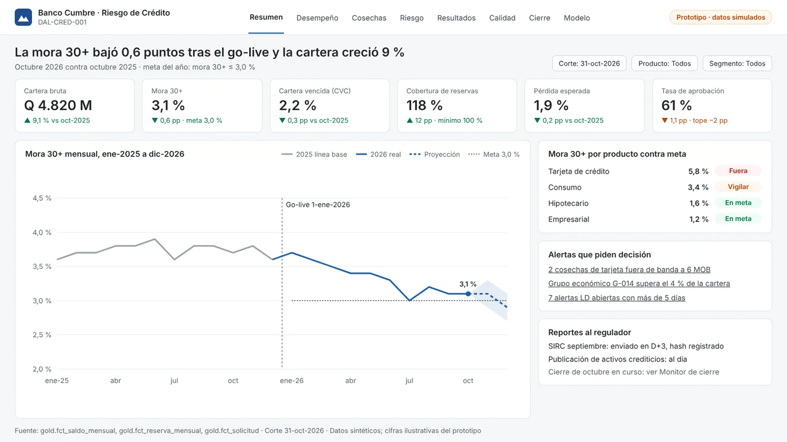

Monitoreo de cosechas y mora, clasificación A–E y reservas por pérdida esperada (JM-47-2022), archivo SIRC conciliado y scoring 5 C's con simulador de políticas, sobre una arquitectura Medallion con datos sintéticos de 24 meses.
Demuestra: riesgo de crédito y portafolio, normativa SIB e IVE
En construcción · fase F2 de 8 · go-live 22-dic-2026